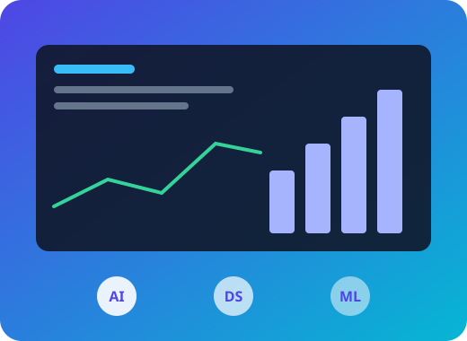
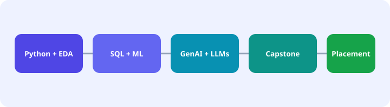

A bundled program combining Generative AI with Data Science — Python, statistics, EDA, SQL, machine learning, LLM concepts, prompt engineering and AI use cases — culminating in a capstone project for modern analytics and AI career paths.
Analytics and AI roles increasingly overlap — data scientists are expected to understand generative AI, and AI practitioners need strong data fundamentals. This combo starts with Python, statistics, exploratory data analysis and SQL, moves through classical machine learning (regression, classification), then introduces generative AI concepts — LLMs, prompt engineering and responsible AI — plus practical use cases like chatbots and document analysis.
Three mini-projects and a full capstone (data pipeline, model/prototype, AI integration, dashboard/report) give you portfolio-ready, demonstrable work across both disciplines.

Organisations are combining analytics and generative AI initiatives, driving demand for professionals fluent in both.
Enterprises are rapidly adopting LLM-powered tools, creating new AI-focused roles.
Every industry needs analysts and data scientists to turn data into decisions.
Professionals who bridge classical data science and generative AI are increasingly sought after.
Indicative role titles and market salary ranges in India, blended from Generative AI and Data Science market data. Actual packages depend on experience, location and employer.
| Role | Experience | Indicative Salary (India, per year)* |
|---|---|---|
| Data Analyst / Junior AI Associate | 0–2 yrs | ₹4–8 LPA |
| Data Scientist / GenAI Application Developer | 2–5 yrs | ₹10–20 LPA |
| Machine Learning Engineer | 2–5 yrs | ₹10–20 LPA |
| Senior Data Scientist / AI Solutions Lead | 6+ yrs | ₹27 LPA+ |
*Ranges are general market indicators compiled from public job data, not a guarantee of placement or salary.
24 weeks combining Data Science foundations with Generative AI, each module labelled by sub-course focus.

Python fundamentals, NumPy, Pandas, descriptive statistics, probability basics, data cleaning, visualization and exploratory data analysis.
SQL queries and joins, Power BI dashboards, regression and classification, train/test split and evaluation metrics.
Feature engineering, model comparison, cross-validation, hands-on tuning.
LLM concepts, prompt engineering, responsible AI, and use cases such as chatbots and document analysis.
OpenAI API, LangChain, embeddings and vector databases for building AI applications.
Three mini-projects: analytics dashboard, ML model, and a Generative AI application.
Solve a business case end to end and deploy your model or app.
Data pipeline, model/prototype, AI integration and dashboard/report, with mentor reviews.
Resume building, Python/SQL/ML/AI interview questions, mock interviews and LinkedIn optimisation.
Receive a SreenadhAI course completion certificate on finishing the program and capstone project.
Resume building, Python/SQL/ML/AI interview questions, mock interviews, LinkedIn optimisation and referrals to hiring partners.
SreenadhAI offers a combined Generative AI + Data Science program with live and online batches, hands-on projects, a capstone and placement assistance. Book a free demo class to judge for yourself.
A bundled program covering Python, statistics, EDA, SQL and machine learning, followed by LLMs, prompt engineering, AI libraries and real use cases, finishing with a capstone project.
Roles increasingly overlap. Data fundamentals make AI applications reliable, and generative AI skills make data professionals more versatile.
4–6 months in total (24 weeks of curriculum), available in classroom and online modes.
Yes. Both are available as individual courses; the combo offers a more complete path across both areas.
Fees depend on the batch and mode. Call +91 93812 43885 for current pricing and offers.
Yes — resume building, mock interviews, interview question practice, LinkedIn optimisation and referrals to hiring partners. Placement is assisted, not guaranteed.